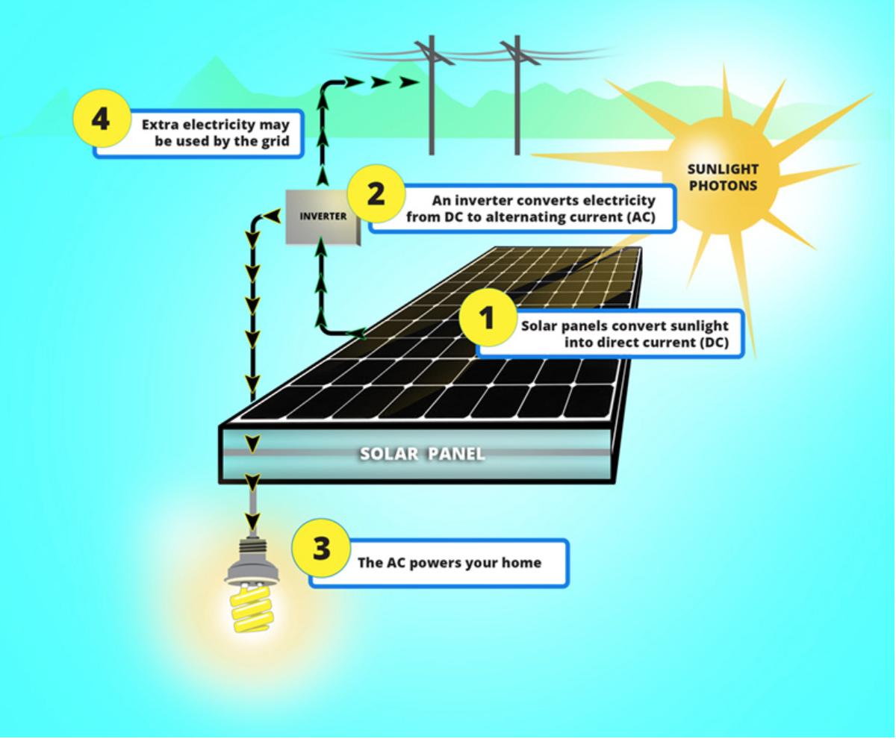

So you want to learn about renewable energy.
Fossil fuels are nonerenewable or in other words a finite resource. Once they run out,
it will not be possible to create more. Not only are they are not sustainable, but also have
harmful affects on the environment. In the near future, fossil fuels will continue to diminish,
causing a higher demand which will lead to fossil fuel resources becoming highly expensive. On the
other hand, Green energy resources are renewable, meaning that they are naturally replenished.
Examples of renewable resources include Solar Energy, Wind Energy, Geothermal energy,
Hydro electricity, and Biomas.

Solar Energy
Solar panels convert direct sunlight into a current that supplies electricity to a house. A solar panel works by allowing photons, or
particles of light, to knock electrons free from atoms, generating a flow of electricity.
The panel uses an inverter in order to convert direct current to an alternating current. Solar panels benefit the environment because
no greenhouse gas emissions are released into the atmosphere when you use solar panels to create electricity. The sun also provides an immense power of energy
which can be used to supply millions of houses. Solar power is an important step into the use of
clean energy production.
Wind Energy
Wind energy is the the process of converting air flow that occurs naturally in the earth's atmosphere to kinetic energy which then powers a turbine to create electricity.
There are different types of wind turbines depending on the amount of power needed to supply a specific area. Single wind turbines are used to power houses and other electrical grids where as, wind farms generate electricity for larger industries.
There are even offshore wind farms that take advantage of the strong, consistent winds of the coastlines to produce a large amount of electricity.
Geothermal Energy
Goethermal energy is created using heat from the Earth's core, which is
hotter than the surface of the sun. The Earth's heat is accessed by drilling beneath the
Earth's surface to capture rising hot water and steam. That steam rises to the surface which acts as a motor to rotate a generator.
The generator then produces electricity and sends it to the power
grid and electricity. Geothermal energy can also be used to heat and cool buildings through
geothermal heat pumps. The U.S. leads the world in geothermal power generation. Seven states have
geothermal power plants: California, Nevada, Utah, Hawaii, Oregon, Idaho and New Mexico. As of 2017,
California and Nevada produce the largest share of the country's geothermal electricity
(73% and 21%, respectively).
Biomass
Biomass is organic material that comes from plants and animals. Solid biomass, such as wood and garbage, can be burned directly to produce heat.
Biomass can also be converted into a gas or liquid biofuels which can then be burned for energy. Biogas forms from composte including crops such as corn and sugar cane that are fermented to produce
fuel for vehicles.
Why are sustainable resources important?
Sustainable resources are essential to our planet. Many of the resources we use right now
won't last forever and will eventually diminish. It is important that we act now to save our
planet from the damages we have caused eitherwise at some point the damage will be unfixable and the death of our plant may be inevitable.
Electricity production is our #1 source of greenhouse gases production.If we continue to damage our environment there will not be a place for our future generations to live.
Clean energy can reduce air pollution, ocean pollution, and the impacts caused by the use of fossil fuels.
Although replacing our fossil-fuel infrastructure seems out of our hands, every individuals contribution adds on to a larger group of people
all making a change. Lets be the generation to go green and spark up the renewable energy cause!